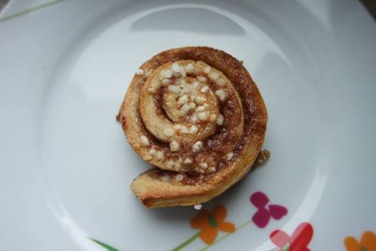

Kanelbullar

This is the best dessert I've ever had, and even though it takes a lot of work, both while making the cinnamon rolls and while cleaning, it's absolutely worth the effort. The result is 40+ soft, delicious cinnamon rolls that in my experience taste great even to people who don't like cinnamon. They're the perfect christmas dessert, for a long winter night spent with friends or family.
Ingredients:
Yeast dough:
- 150g unsalted butter
- 500ml room temperature milk
- 42g cube fresh yeast
- 150g granulated sugar
- 1 tsp salt
- 1 tsp ground cardamom
- 1kg all-purpose flower (You might need to use a bit more or a bit less)
Cinnamon filling and topping:
- 75g soft unsalted butter
- 130g granulated sugar
- 1½ tbsp cinnamon
- 1 egg
- 1 tbsp milk
- Some pearl sugar to top
Steps:
Yeast dough:
- Melt the butter and pour it in a large bowl. Add the milk and stir well.
- Sprinkle the crumbled fresh yeast on top and stir a few times until the yeast is dissolved.
- Add the granulated sugar, salt, cardamom, and almost all of the flour, leaving 100g flour aside. Knead the dough well.
- Turn the dough onto the working surface. Start adding the remaining flour, about 1 tablespoon at a time, and kneading the dough with your hands until it is elastic and doesn't stick to your hands anymore. You might not need to add all the flour; stop when the dough feels as described above. If the dough is still very sticky after adding all the flour, you can add a little more flour, but always only a little at a time
- Place the dough into a large bowl, cover it with a kitchen towel, and let it rise in a warm place until doubled in size (if you want to make sure it's warm enough, place it in an unheated oven). This will take about 30-40 minutes.
- When the dough has risen, punch it down, knead it very shortly again, and divide it into three equal parts
- Lightly flour the working surface and roll one dough ball into a large rectangle, about 35x45cm.
- Divide the soft butter into three parts as well, and smear the rolled rectangle with ⅓ of the butter. Sprinkle it generously with ⅓ of the cinnamon-sugar mixture.
- Roll the dough starting at the smaller end and cut it into 3-4cm inches thick pieces. Place the cinnamon snails on baking trays lined with baking paper.
- Repeat with the remaining pieces of dough. You will need at least two lined baking trays for this amount of cinnamon buns, you will have a bit over 40 cinnamon rolls.
- Cover the trays with clean kitchen towels and let rise in a warm place for about 30 minutes or until doubled in size.
- In the meantime, preheat the oven to 200 degrees Celsius.
- Beat together the egg and the milk in a small bowl. Brush the cinnamon buns with the mixture and sprinkle them with some pearl sugar.
- Bake the kanelbullar, one tray after another, for about 10 minutes or until golden brown and cooked through.
- Let the cinnamon rolls cool slightly on a wire rack and serve warm or cold. The cinnamon buns can be reheated in the oven. They can be frozen as well, then slightly defrosted and reheated in the oven.
Home